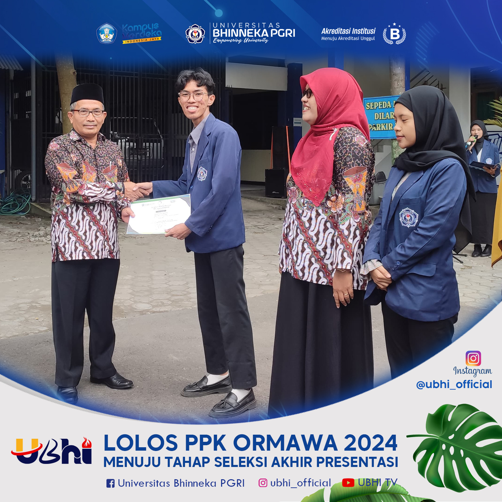

Universitas Bhinneka PGRI Tulungagung Lolos Program PPK Ormawa 2024
Universitas Bhinneka PGRI Tulungagung yang berhasil lolos dalam Program Penguatan Kapasitas Organisasi Kemahasiswaan (PPK Ormawa) Tahun 2024 yang diselenggarakan oleh Direktorat Belmawa, Direktorat Jenderal Pendidikan Tinggi, Riset, dan Teknologi, Kementerian Pendidikan, Kebudayaan, Riset, dan Teknologi (Kemendikbudristek).
Program PPK Ormawa bertujuan untuk meningkatkan kapasitas organisasi kemahasiswaan dalam memberikan kontribusi nyata kepada masyarakat melalui kegiatan pengabdian yang inovatif dan berkelanjutan.
Proposal tersebut berhasil lolos seleksi nasional dan akan memperoleh pendanaan serta pendampingan selama pelaksanaan program. Hal ini menunjukkan komitmen mahasiswa Universitas Bhinneka PGRI Tulungagung dalam mendukung pencapaian tujuan pembangunan berkelanjutan (SDGs) serta mewujudkan Tri Dharma Perguruan Tinggi, khususnya dalam aspek pengabdian kepada masyarakat.
Rektor Universitas Bhinneka PGRI Tulungagung, [Nama Rektor], menyampaikan apresiasi dan dukungan penuh terhadap pencapaian ini. “Kami bangga atas keberhasilan tim mahasiswa yang lolos PPK Ormawa 2024. Ini merupakan bukti bahwa mahasiswa UBPT mampu bersaing di tingkat nasional dan berkontribusi nyata untuk masyarakat,” ujarnya.
Diharapkan, melalui program ini, mahasiswa dapat mengembangkan potensi diri, meningkatkan kemampuan manajerial organisasi, dan memperkuat sinergi antara kampus dan masyarakat.